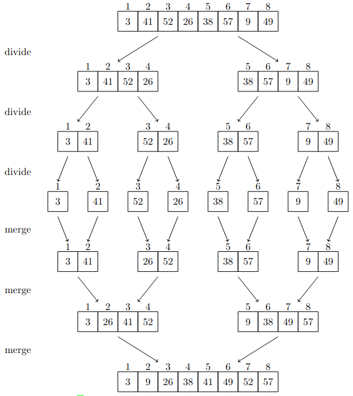

2.3 Designing algorithms
Contents
2.3 Designing algorithms#
Let us implement MERGE-SORT.
#include <stdio.h>
#include <stdlib.h>
#include <time.h>
#include <string.h>
void print_int_array(int *v, int n); //Prints an n-sized integer array v
int * random_int_array(size_t n); // Randomly creates an n-sized integer array
void merge(int *A, int p, int q, int r) {
// Merges A[p:q] and A[q+1:r], where p<=q<r
int i,j,k; // Loop indices
int n1 = q - p + 1; // Length of A[p:q]
int n2 = r - q; // Length of A[q+1:r]
int * L = malloc(n1*sizeof(int));
int * R = malloc(n2*sizeof(int));
// Copy A[p:q] and A[q+1:r] to L and R
memcpy(L,A+p,n1*sizeof(int));
memcpy(R,A+q+1,n2*sizeof(int));
i = 0; // Index of L
j = 0; // Index of R
k = p; // Index of A[p:q]
while (i < n1 && j < n2) {
if (L[i] <= R[j]) {
A[k++] = L[i++];
} else {
A[k++] = R[j++];
}
}
// Copy the remainders of L or R to A
while (i < n1) {
A[k++] = L[i++];
}
while (j < n2) {
A[k++] = R[j++];
}
free(L);
free(R);
return;
}
void merge_sort(int *A, int p, int r) {
// Merge-sort on A[p:r]
if (p == r) {
return;
}
// Break A[p:q] in two
int q = (p + r) / 2;
merge_sort(A, p, q);
merge_sort(A, q + 1, r);
merge(A, p, q, r);
}
// Test
int main() {
int n=10; // Test size
int * A = random_int_array(n);
printf("Array created:\n ");
print_int_array(A,n);
printf("\n\n");
merge_sort( A , 0 , n-1 );
printf("Ordered array:\n ");
print_int_array(A,n);
printf("\n");
free(A);
return 0;
}
///////////////////////////////
void print_int_array(int *v, int n) {
// Prints an n-sized integer array v
int i;
for (i=0;i<n-1;i++) {
printf("%d , ",v[i]);
}
printf("%d",v[i]);
return;
}
int * random_int_array(size_t n) {
// Randomly creates an n-sized integer array v
srand(time(NULL));
int * A = malloc(n*sizeof(int));
for (int i = 0; i < n; i++) {
A[i] = rand() % 100;
}
return A;
}
Array created:
66 , 3 , 81 , 54 , 38 , 33 , 23 , 33 , 9 , 21
Ordered array:
3 , 9 , 21 , 23 , 33 , 33 , 38 , 54 , 66 , 81
2.3-1#
Using Figure 2.4 as a model, illustrate the operation of merge sort on an array initially containing the sequence \(\langle 3,41,52,26,38,57,9,49\rangle\).

The image above was created by the TikZ code in 2.3-1_tikz.
2.3-2#
The test in line 1 of the
MERGE-SORTprocedure reads “if \(p\geq r\)” rather than “if \(p\neq r\)”. IfMERGE-SORTis called with \(p>r\), then the subarray \(A[p:r]\) is empty. Argue that as long as the initial call ofMERGE-SORT(A,1,n)has \(n\geq 1\), the test “if \(p\neq r\)” suffices to ensure that no recursive call has \(p>r\).
This question is not well stated. It is meant to say that instead of returning trivially if \(p\geq r\), we sould modify the algorithms to perform the remainder of the procedure if \(p\neq r\). Note that this is equivalent to inverting the conditional if-else (with the else part being implicit between lines 2 and 3).
For consistency, let us keep the original structure of the procedure. The modified version reads as follows:
MERGE-SORT(A,p,r)
1 if p==r // one element?
2 return
3 q= (p+r)/2 // midpoint of A[p:r]; integer division.
4 MERGE-SORT(A,p,q) // recursively sort A[p:q]
5 MERGE-SORT(A,q+1,r) // recursively sort A[q+1:r]
6 MERGE(A,p,q,r)
If we make a call of MERGE-SORT(A,p,r) with \(p\leq r\), then either the procedure above returs the list \(A[p:r]\) unchanged (if \(p=r\)), or it calls MERGE-SORT(A,p,q) and MERGE-SORT(A,q+1,r) if \(p<r\), where \(q=\lfloor (p+r)/2\rfloor\). In this case, we have \(p\leq q\) and \(q+1\leq r\), as \(p<r\). Moreover, the subarrays \(A[p:q]\) and \(A[q+1,r]\) are strictly shorter than the initial array \(A[p:r]\)
Thus, any call of MERGE-SORT(A,p,r) with \(p\leq r\) will be computed by making calls of the same sort, which will in turn be computed by making calls of the same sort, and so on, and no calls with \(p>r\) will be made throughout the recursion. This applies, in particular, to a call of the form MERGE-SORT(A,1,n) with \(1\leq n\).
2.3-3#
State a loop invariant for the while loop of lines 12-18 of the
MERGEprocedure. Show how to use it, along with the while loops of lines 20-23 and 24-27, to prove that theMERGEprocedure is correct.
Let us recall what is the MERGE procedure as in the book.
MERGE(A,p,q,r)
1 n_L = q-p+1 // length of A[p:q]
2 n_R = r-q // length of A[q+1:r]
3 let L[0:n_L-1] and R[0:n_R-1] be new arrays
4 for i = 0 to n_L-1 // copy A[p:q] into L[0:n_L-1]
5 L[i] = A[p+i]
6 for j = 0 to n_R-1 // copy A[q+1:r] into R[0:n_R-1]
7 R[j] = A[q+j+1]
8 i = 0 // i indexes the smallest remaining element in L
9 j = 0 // j indexes the smallest remaining element in R
10 k = 0 // k indexes the location in A to ûll
11 // As long as each of the arrays L and R contains an unmerged element,
// copy the smallest unmerged element back into A[p:r]
12 while i < n_L and j < n_R
13 if L[i] <= R[j]
14 A[k] = L[i]
15 i = i+1
16 else A[k] = R[j]
17 j = j+1
18 k=k+1
19 // Having gone through one of L and R entirely, copy the
// remainder of the other to the end of A[p:r].
20 while i < n_L
21 A[k] = L[i]
22 i = i+1
23 k = k+1
24 while j < n_R
25 A[k] = R[j]
26 j = j+1
27 k = k+1
Loop invariant: At the start of each iteration, the first \(i\) elements of \(L\) and the first \(j\) elements of \(R\) coincide with the smallest \(k\) elements of \(A[p:r]\) originally, including repetitions (so, in particular, \(i+j=k\)), and these \(k\) elements are placed in order at the beginning of \(A[p:r]\).
Moreover, throughout the iterations, the elements in \(L\) are the same as those of \(A[p:q]\), and the elements of \(R\) are the same as those of \(A[q+1:r]\), oroginally, and both \(L\) and \(R\) are ordered (which is a condition to apply the algorithm).
Even though the exercise does not ask us to prove all usual properties of the loop invariant, let us do it anyways: Initialization is trivial (vacuous), as usual. If the loop invariant holds at the start of an iteration, then the \((k+1)\)-th smallest element originally in \(A[p:r]\) has to be either \(L[i]\) or \(R[j]\). The conditional in lines 13-17 checks which case holds, puts this \((k+1)\)-th smallest element in the \((k+1)\)-th position of \(A[p:r]\), and increments \(i\) or \(j\) accordingly, to update the number of elements of \(L\) or \(R\) which have been taken into account. Thus the loop property is maintained
The loop terminates when either \(i=n_L\) or \(j=n_R\). Let us say that \(i=n_L\). Then the originally \(n_L+j\) smallest elements of \(A[p:r]\) have been placed in its initial positions in an ordered fashion, as the loop invariant states, and these are comprised of the initial \(n_L\) elements of \(L\) (that is, all of \(L\)) and the first \(j\) elements of \(R\). The remaining \(n_R-j\) original elements of \(A\) - which are all larger than the \(n_L+j\) smallest elements already at the start of \(A\), and so should be placed in order at the end of \(A\) - appear at the end of \(R\) in order. The loop in lines 20-23 does nothing, while the loop in lines 24-27 puts these \(n_R-j\) remaining elements at the end \(A\), just as we want.
2.3-4#
Use mathematical induction to show that when \(n\geq 2\) is an exact power of \(2\), the solution of the recurrence
\[\begin{equation*}T(n)=\begin{cases}2&\text{if }n=2,\\2T(n/2)+n&\text{if }n>2\end{cases}\end{equation*}\]is \(T(n)=n\lg n\).
The exact powers of \(2\) are those numbers of the form \(n=2^k\).
For \(k=1\):
Suppose that \(T(2^k)=(2^k) \lg (2^k)\) and \(n=2^{k+1}\). Then
so the result also holds for \(k+1\).
Note that an alternative to this proof by induction would be to simply show that \(T(n)=n\lg n\) satisfies the given recursion.
2.3-5#
You can also think of insertion sort as a recursive algorithm. In order to sort \(A[1:n]\), recursively sort \(A[1:n-1]\) and then insert \(A[n]\) into the sorted subarray \(A[1:n-1]\). Write pseudocode for this recursive version of insertion-sort. Give a recurrence for its worst-case running time.
The recursive version of insertion sort and its running time (up to \(\Theta\)) are given by
INSERTION-SORT-RECURSIVE(A) times unitary cost
1 if n<=1 1 1
2 return 1 1
3 INSERTION-SORT-RECURSIVE(A[1:n-1]) 1 T(n-1)
4 key = A[n]
5 i=n-1 1 1
6 while i>0 and A[i]>key t 1
7 A[i+1] = A[i] t-1 1
8 i=i-1 t-1 1
9 A[i+1]=key 1 1
where \(t = n\) in the worst case. So the worst-case running time satisfies \(T(n) = T(n-1) + \Theta(n)\).
(Remark: Exercise 2.3-7 deals with what is usually called BINARY-INSERTION-SORT, which looks like it would be an improvement on binary search but is not.)
The recursive version of insertion-sort is implemented below.
#include <stdio.h>
#include <time.h>
void insertion_sort_recursive(int *A, size_t n) {
if (n<=1) return;
insertion_sort_recursive(A,n-1);
int key = A[n];
int i = n-1; // Index
while (i >= 0 && A[i] > key) {
A[i + 1] = A[i];
i--;
}
A[i + 1] = key;
}
// Test code below
int main() {
int i; // Index
int n=10; // Test size
srand(time(NULL));
// Dinamically allocate random integer array
int * A = malloc(n*sizeof(int));
for (i=0;i<n;i++) {
A[i] = rand()%21 - 10;
}
printf("Array created:\n ");
for (i=0;i<n-1;i++) {
printf("%d, ",A[i]);
}
printf("%d.\n\n",A[i]);
insertion_sort_recursive( A , n );
printf("Ordered array:\n ");
for (i=0;i<n-1;i++) {
printf("%d, ",A[i]);
}
printf("%d.\n",A[i]);
free(A);
return 0;
}
Array created:
-7, -3, 4, -5, -5, -1, -10, -6, -1, -3.
Ordered array:
-10, -7, -6, -5, -5, -3, -3, -1, -1, 4.
2.3-6#
Referring back to the searching problem (see Exercise 2.1-4), observe that if the subarray being searched is already sorted, the searching algorithm can check the midpoint of the subarray against \(x\)[1] and eliminate half of the subarray from further consideration. The binary search algorithm repeats this procedure, halving the size of the remaining portion of the subarray each time. Write pseudocode, either iterative or recursive, for binary search. Argue that the worst-case running time of binary search is \(\Theta(\lg n)\).
[1]: The questions was stated with “\(v\)” for the value being searched for, which is what was used in previous editions of the book. However, question 2.1-4 uses “\(x\)” for this value.
For completeness, let us write several versions of BINARY-SEARCH
BINARY-SEARCH(x,A), iterative version
1 // Searches for x in A[1:n]
2 l=1 // left limit
3 r=A.length // upper limit
4 while l<=r
5 // search for x in A[l:r]
6 m = floor((l+r)/2) // midpoint of A[l:r]
7 if A[m]==x
8 return m
9 else if A[m]<x
10 l=m+1
11 else // A[m]>x
12 r=m-1
13 // Each iteration of while loop makes r-l decrease by at least 1.
// Loop terminates if x was not found
14 return NIL
BINARY-SEARCH(x,A,p,q), recursive version 1
1 // Searches for x in A[p:q]
2 m = floor((p+q)/2)
3 if p>q
4 return NIL
5 if A[m]==x
6 return m
7 if A[m]<x
8 return BINARY-SEARCH(v,A,m+1,q)
9 return BINARY-SEARCH(v,A,p,m-1)
To find the index index \(m\) for which \(A[m]=x\), call BINARY-SEARCH(x,A,1,A.length).
Let us analyse the worst-case running time for the iterative version. In the first iteration of the “while” loop, the difference \(R-L\) starts as being \(n-1\). At each iteration, the new value of \(R-L\) is strictly smaller than half of what it was in the previous iteration. In the worst case (when there is no return in any iteration), the loop exists when \(R<L\). If the loop is run through \(k=\lg n\) times, then at the end we have
so \(R-L<=0\). The loop will run at most one more time, after which it will necessarily terminate. Each other line in the code has constant time, so the final cost will be \(\Theta(\lg n) + \Theta(1) = \Theta(lg n)\).
Alternatively, looking at any of the recursive versions, we see that the cost satisfies the recursion
for some cost \(c\), in a manner similar to the the book’s analysis of MERGE-SORT. If \(n=2^k\), then by induction we obtain
Remark: Here is another recursive version, with the same worst-case running time as the one above:
BINARY-SEARCH(x,A) recursive version 2
// We assume k + NIL = NIL for any integer k
1 n=A.length // Could also be a parameter
2 if n0=0
3 return NIL
4 m=floor((1+n)/2)
5 if A[m]=v
6 return m
7 if A[m]<v
8 return m + BINARY-SEARCH(v,A[(m+1):n])
9 return BINARY-SEARCH(v,A[1:(m-1)])
2.3-7 #
The while loop of lines 5-7 of the
INSERTION-SORTprocedure in Section 2.1 uses a linear search to scan (backward) through the sorted subarray \(A[1:j-1]\). What is insertion sort used a binary search (see Exercise 2.3-6) instead of a linear search? Would that improve the overall worst-case running time of insertion sort to \(\Theta(n\lg n)\)?
An implementation of the proposed algorithm follows:
BINARY-INSERTION-SORT(A,n):
1 for i=2 to n
2 key = A[i]
3 // Find correct position of key in A[1:i-1]
// with a binary search
4 if A[1]>key
5 pos = 1
6 else if A[i-1]<key
7 pos = i
8 else
9 low = 1
10 high = i-1
11 while low+1 < high
12 m = floor((low+high) / 2)
13 if A[m]>key
14 high = m
15 else
16 low = m
17 pos = m
18 // shift elements above pos to the right and place the key
19 for j=i-1 down to pos
20 A[j+1]=A[j]
21 A[pos]=key
Lines 3-17 find above the right position on which the key \(A[i]\) should be places, which indeed adds upt to a total cost of \(\Theta(n\lg n)\). However, we still need to shift all elements above this position to the right, which is done in lines 19-20, and is basically the same as the while loop in lines 5-7 of the original algorithm. In the worst case, this still has quadratic cost.
Remark: One could even try to implement this procedure on a linked list (seem later in the book) to get rid of the linear cost associated with shifting. However, this would make it so that binary search has linear or quadratic cost (depending on how one takes care of accessing elements of the linked list).
2.3-8#
Describe an algorithm that, given a set \(S\) of \(n\) integers and another integer \(x\), determines whether \(S\) contains two elements that sum to exactly \(x\). Your algorithm should take \(\Theta(n \lg n)\) time in the worst case.
1 MERGE-SORT(S)
2 a=1
3 b=n
4 while a<b
5 if S[a]+S[b]==x
6 return TRUE
7 if S[a]+S[b]<x
8 // Since S is ordered, S[a]+S[i]<x for any i,
// So we may discard a
9 a=a+1
10 else
11 // Similarly, in this case, S[i]+S[b]>x
// for any i, and we discard b
12 b=b-1
13 return FALSE
Line 1 takes time \(\Theta(n \lg n)\) and all others are constant, with the while loop running at most \(n\) times, so we have cost $\(\Theta(n \lg n) + \Theta(n) = \Theta(n \lg n)\)$
This algorithm can be modified to an algorithm which solves an equation of the form \(f(S[a],S[b])=x\), with \(f\) entrywise monotonic:
1 MERGE-SORT(S)
2 a=1
3 b=n
4 while a<b
5 if f(S[a],S[b])==x
6 return TRUE
7 if f(S[a],S[b])<x
8 // Since S is ordered, f(S[a],S[i])<x for any i,
// So we may discard a
9 a=a+1
10 else
11 // Similarly, in this case, f(S[i],S[b])>x
// for any i, and we discard b
12 b=b-1
13 return FALSE
Note that the while loop in lines 4-17 takes linear time. We could substitute it by a collection of binary searches, which itself would take take \(\Theta(n\lg n)\).
4 for a=1 to n
5 create the list f(S[a],S[1:n]) // = [f (S[a],S[1]), f(S[a],S[2]), ..., f(S[a],S[n]) ]
6 b = BINARY-SEARCH(x,f(S[a],S[1:n]) )
7 if b != NIL
8 return TRUE
9 return FALSE